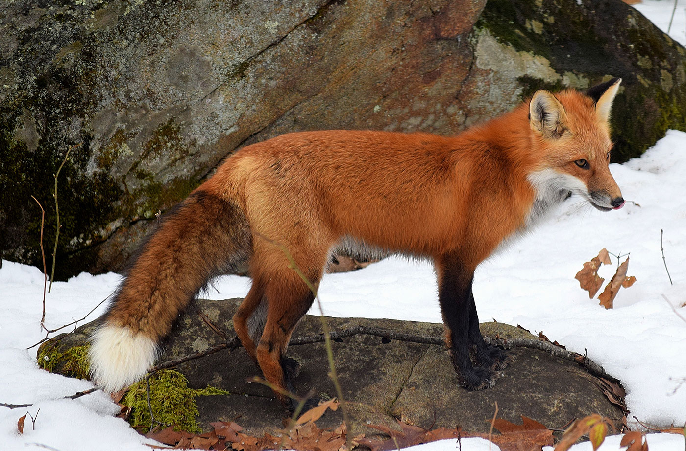

Cáo
Đặc điểm ngoài tự nhiên
Với kích thước từ nhỏ tới trung bình thuộc họ Chó (Canidae), cáo có đặc trưng là có mõm dài và hẹp, đuôi rậm, mắt xếch, tai nhọn.
Tập tính cơ bản
Thông thường, chúng là động vật sống đơn lẻ, những kẻ kiếm ăn cơ hội, săn bắt các con mồi sống (đặc biệt là động vật gặm nhấm nhỏ). Sử dụng kỹ thuật tấn công kiểu chộp được thực hiện từ khi chúng còn non, chúng có khả năng giết chết con mồi rất nhanh. Cáo cũng ăn các loại thức ăn khác, từ châu chấu tới hoa quả và các loại quả mọng.
